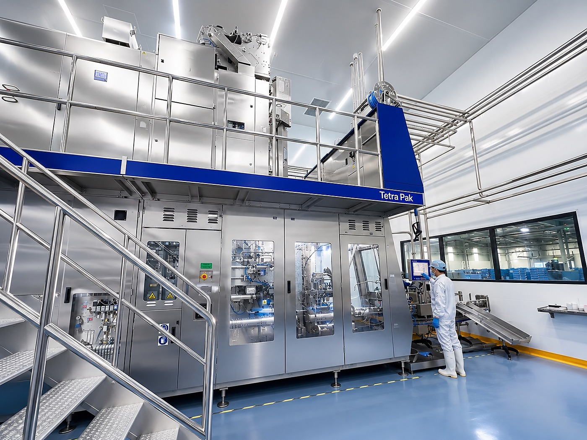
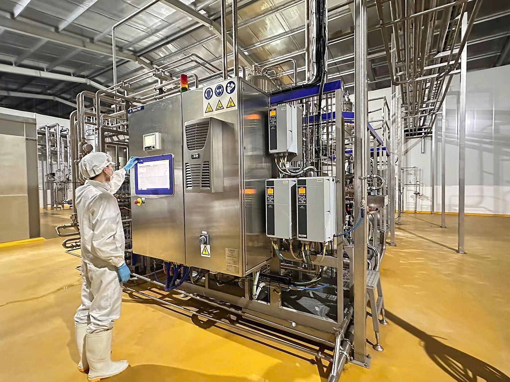
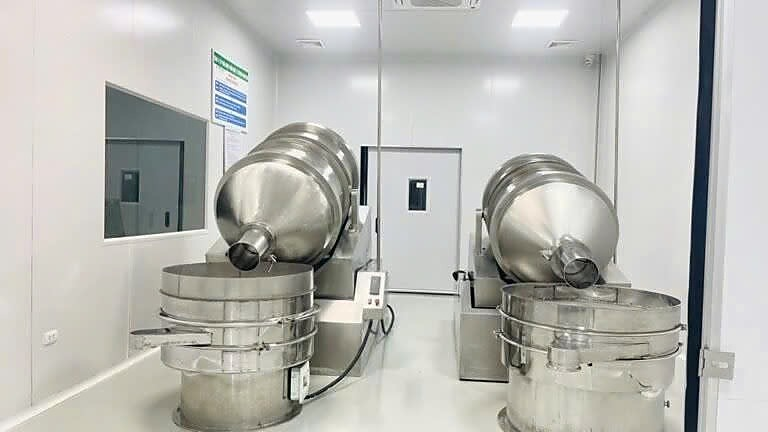
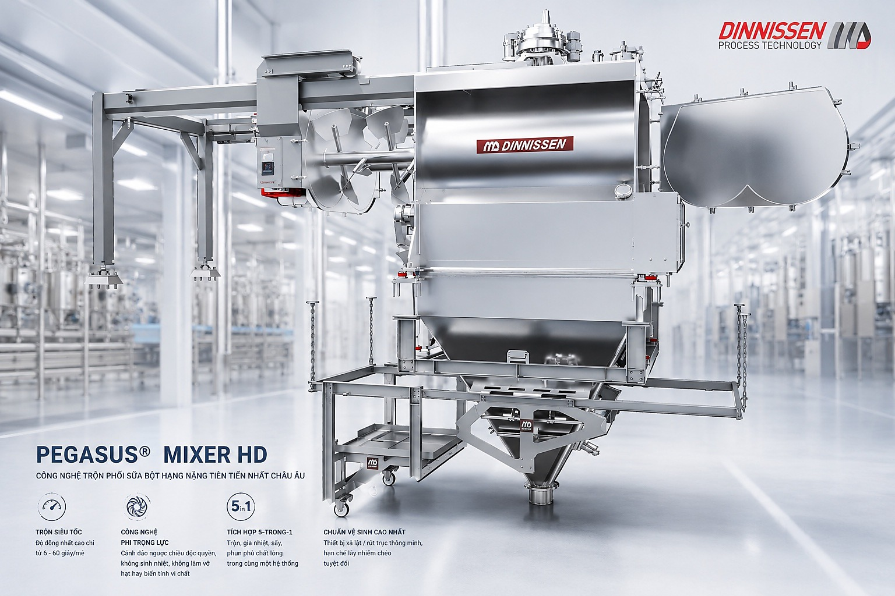

Tetra Pak
THỤY ĐIỂN
Đối tác chiến lược về công nghệ chế biến và chiết rót vô trùng cho dây chuyền sữa nước, góp phần bảo toàn chất lượng và giá trị dinh dưỡng của sản phẩm.
CÔNG NGHỆ SẢN XUẤT TIÊU CHUẨN QUỐC TẾ
Hạ tầng tiêu chuẩn Châu Âu – Định hình đẳng cấp sản xuất
Nhà máy AMM Germany Nutrition quy tụ hệ thống thiết bị và giải pháp công nghệ đến từ các đối tác hàng đầu thế giới, kiến tạo dây chuyền sản xuất tự động hóa khép kín, đáp ứng những yêu cầu nghiêm ngặt về chất lượng, độ ổn định và an toàn thực phẩm.

Đối tác chiến lược về công nghệ chế biến và chiết rót vô trùng cho dây chuyền sữa nước, góp phần bảo toàn chất lượng và giá trị dinh dưỡng của sản phẩm.

Đối tác tư vấn giải pháp kỹ thuật tổng thể, cung cấp thiết bị và chuyển giao công nghệ sản xuất theo tiêu chuẩn kỹ thuật châu Âu.

Cung cấp các giải pháp hệ thống phối trộn, hỗ trợ tối ưu hiệu suất vận hành, độ ổn định và năng lực sản xuất.

DINNISSEN
PROCESS TECHNOLOGY
Hệ thống trộn phối công suất cao ứng dụng công nghệ phi trọng lực, được thiết kế nhằm tạo độ đồng nhất nhanh, hạn chế sinh nhiệt và giảm tác động đến các thành phần dinh dưỡng nhạy cảm.
Hỗ trợ đạt độ đồng nhất cao trong thời gian từ 6 đến 60 giây mỗi mẻ, phù hợp với yêu cầu sản xuất quy mô công nghiệp.
Hệ thống cánh trộn tạo trạng thái chuyển động nhẹ của nguyên liệu, giúp hạn chế sinh nhiệt, giảm nguy cơ phá vỡ cấu trúc hạt và ảnh hưởng đến vi chất nhạy cảm.
Có khả năng kết hợp các công đoạn trộn, gia nhiệt, sấy và phun phủ chất lỏng trong cùng một hệ thống.
Cấu trúc hỗ trợ tháo lắp và làm sạch, góp phần kiểm soát tồn dư nguyên liệu và hạn chế nguy cơ lây nhiễm chéo giữa các mẻ sản xuất.